Red dots are where corners were identified.
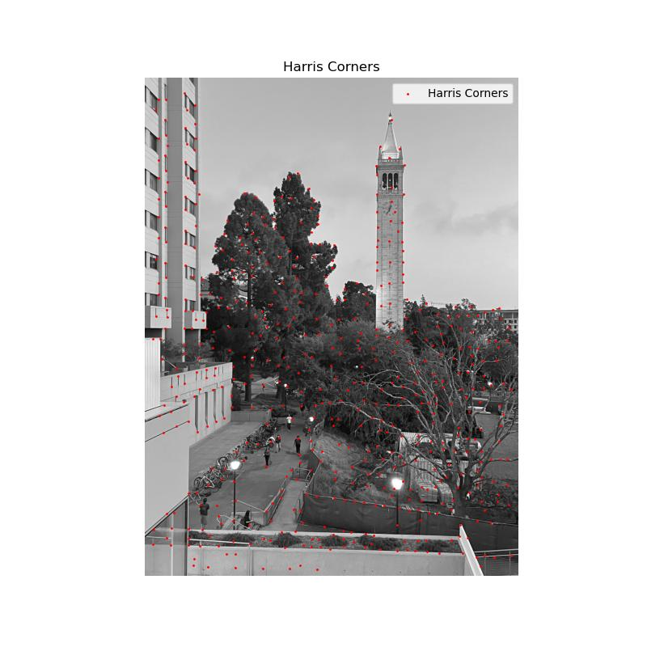
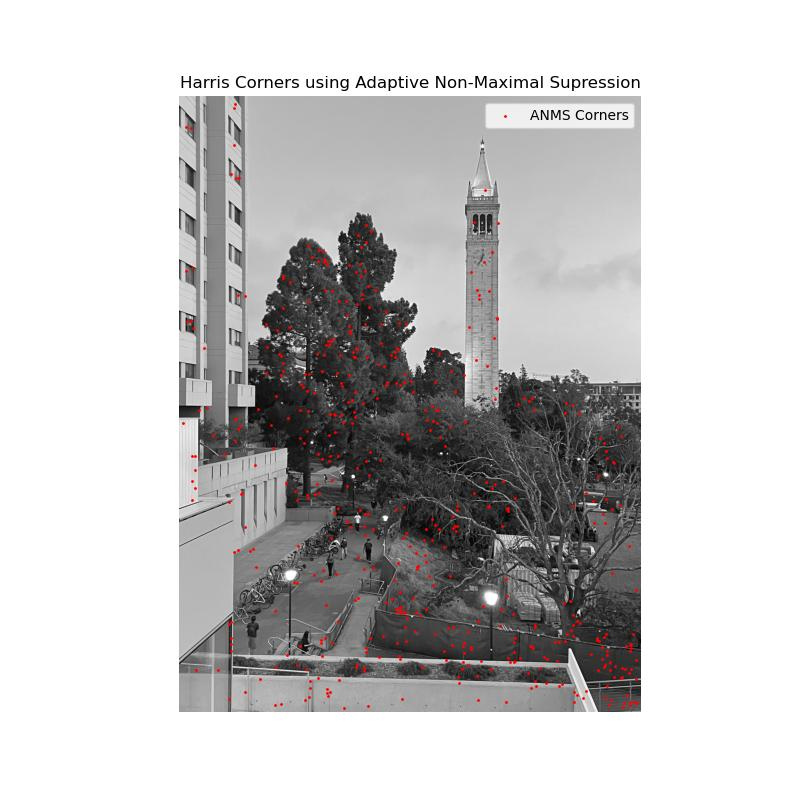
At first, I implemented the feature descriptor extraction algorithm as we were instructed:
I first blurred the image with a gaussian filter to reduce aliasing before downsampling. Then, for every pixel in the image, I looked at a 40x40 pixel window around the pixel. I then took every 5th pixel in vertical and horizontal directions, resulting in a bunch of 8x8 descriptors.
But, the descriptors looked closer to random noise than edge detectors. From what I know about CNNs, features that get learned look like edge detectors. And learned features are the best based off of some loss function. So I figured that it would probably be a good idea to get my descriptors to look more like edge detectors since I knew I was going to have to perform some kind of least squares loss on finding the best correspondences in RANSAC.
My improved extraction algorithm doesn’t assume that pixels are one whole unit each (integers). It assumes a pixel is a continuous space. Since I can’t index [0.5, 0.5] in arrays, I used scipy’s map_coordinates to perform bilinear interpolation to sample floating point (x, y) locations. This fixes the “pixel as one unit” rounding issue and results in less noise in my features!
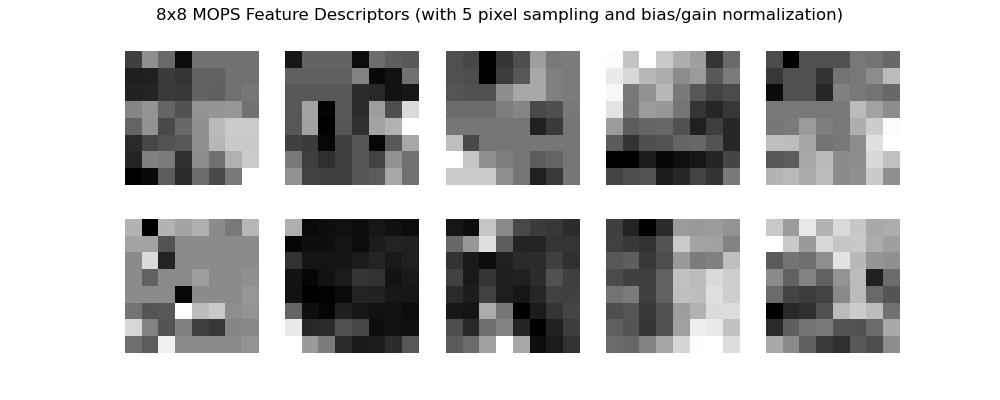
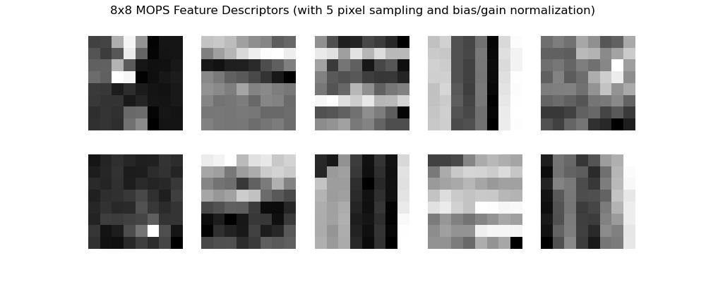
At first I implemented a feature matching algorithm that used double for loops. But this took a very long time to run, so I decided to somewhat vectorize it.
My implementation iterates through every descriptor in the first image and calculates the Euclidean distance from it to every descriptor in the second image (represented as a vector) using the L2 norm. Then, I choose the smallest and second smallest distances (1NN, 2NN). I assume that they must signal correspondences, as they are the best feature matches between any two points in both images. Finally, I apply Lowe’s ratio test to see how much better the best match is than the second best match. MOPs paper said that if they are close, then the feature is ambiguous and we should discard it, otherwise it’s useful.
See visualization of feature matches below:
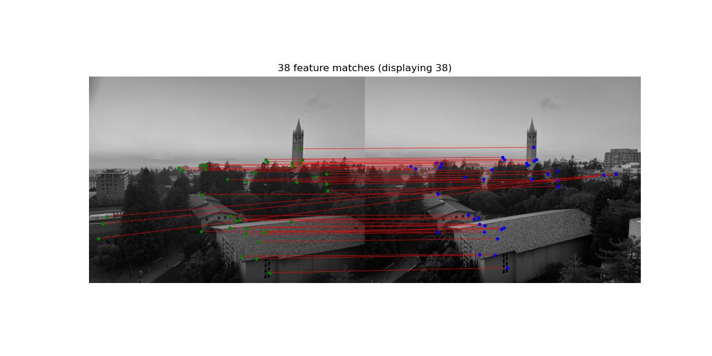
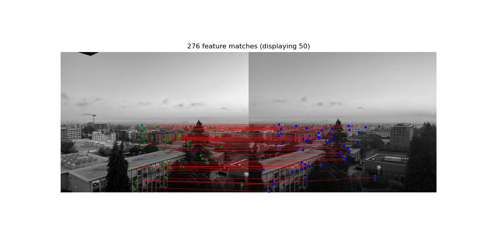
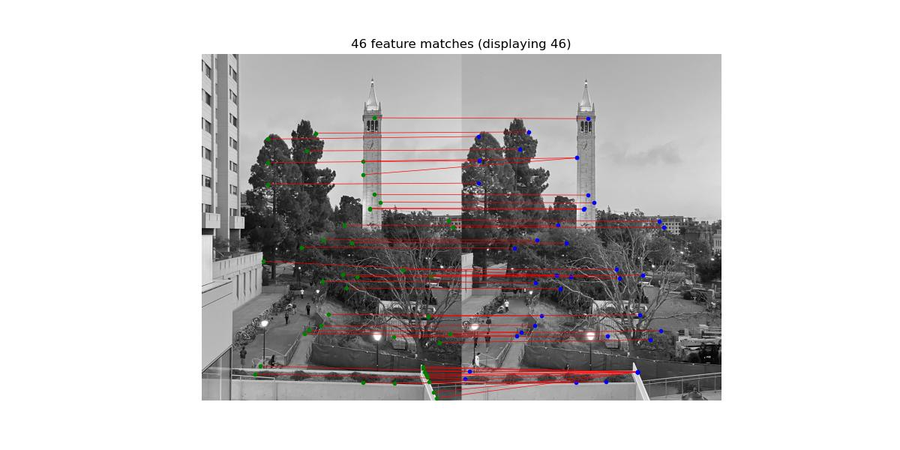
As someone who loves the beauty of Least Squares, I have to say… this was a pretty fun algorithm to implement.
I implemented RANSAC as follows: For every iteration (a hyperparameter I set to 2000), I sampled 4 correspondences (to satisfy 8 degrees of freedom needed to calculate the homography) and computed the homography from my first image to my second. Then I projected all points in my first image using the homography. I calculated the error of projection using the L2 norm, then identified inliers as points whose errors were under some threshold (a hyperparameter I set to 3.0). I chose the final homography as the one that produced the most inliers across all iterations of the algorithm.
I ran into a few difficulties while coding this (a lot less fun). The provided Harris function gave me points as (y,x) but my RANSAC algorithm assumed (x,y). When I finally figured this out, I simply converted (y,x) to (x,y) while computing the homography and projections so I wouldn’t have to change my RANSAC algorithm. In part A, my mosaic stitched my second image onto my first image, but in RANSAC I computed my homography from my first image to my second image, so I rewrote my stitching code accordingly.
In part A, I was running out of time, so I implemented a naive masking system to blend my images.I simply blended the edges at the overlap, but there were still some pretty visible edge artifacts. In part B, I feather my masks to be most intense at the center and dissipate toward the edges (calculated by the furthest edge). This resulted in a much smoother blend and removed harsh seams.
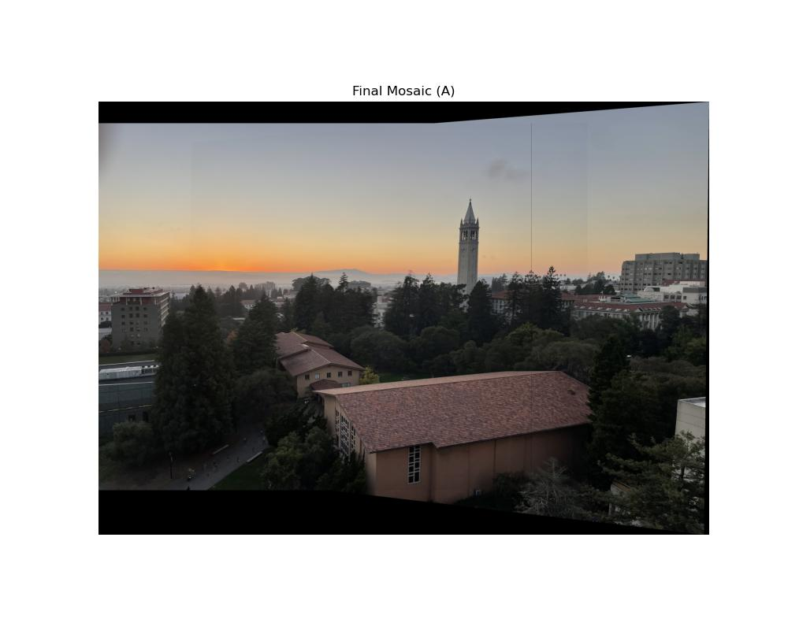
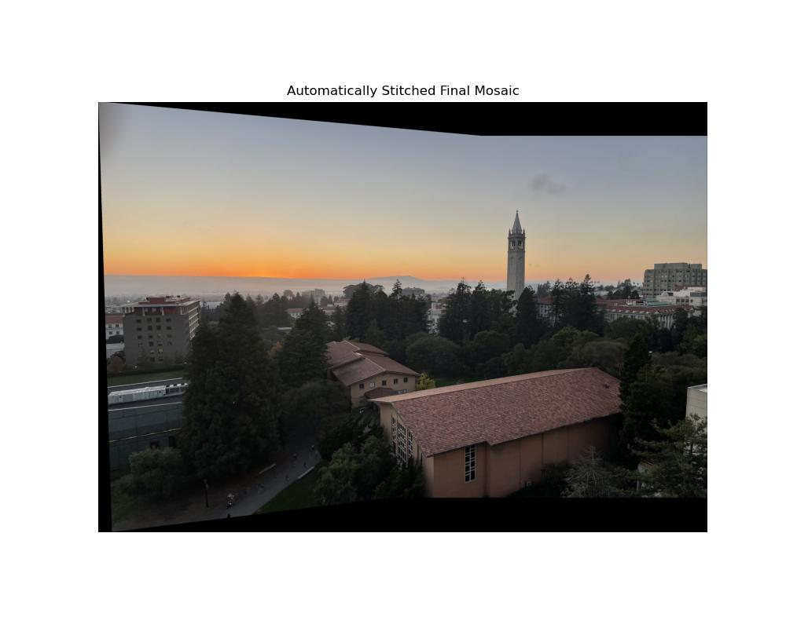
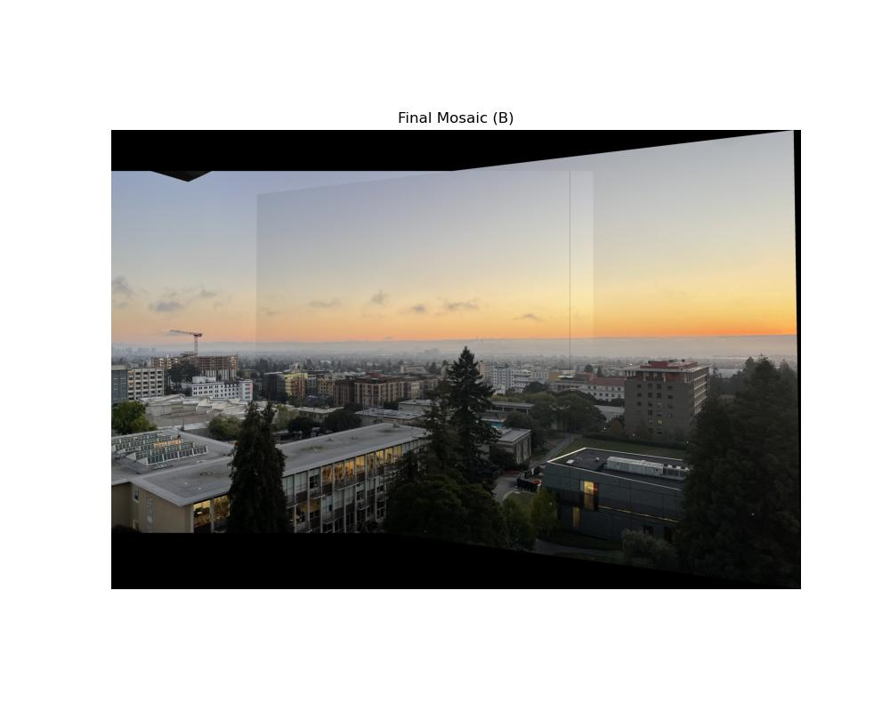
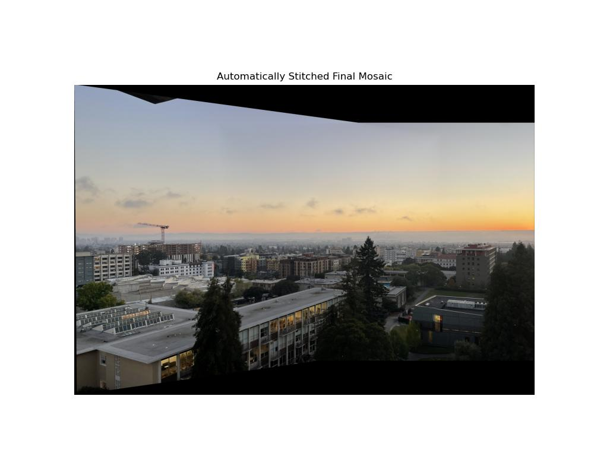
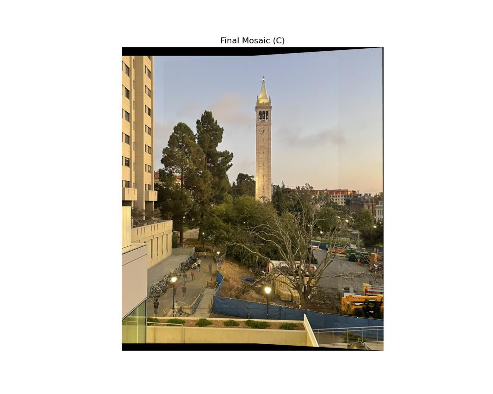
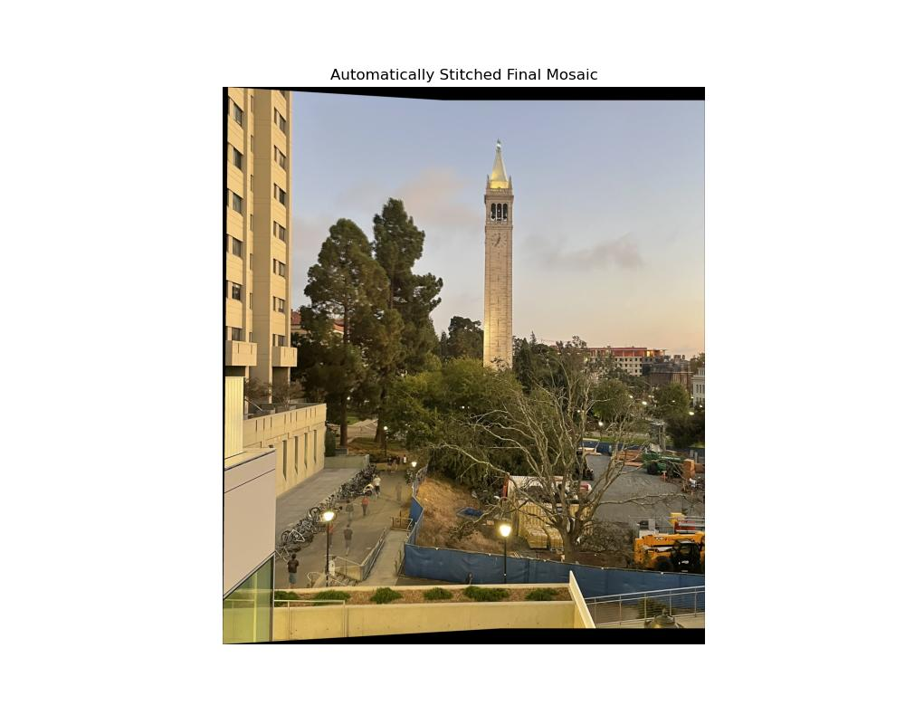